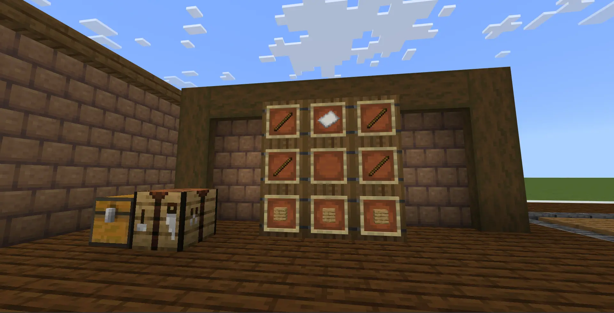
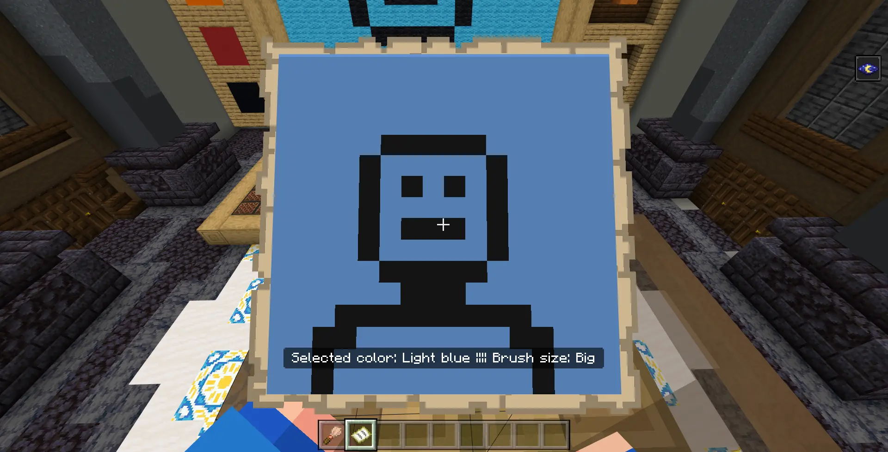

Did you know Art Enthusiasm V2 is out? It has more features and better performance! Check it out!
The "Art Enthusiasm" brings a fresh chance for you to show your artistic side in Minecraft Bedrock! With the "Art Enthusiasm" Add-On, you get a cool new method to let your creativity shine through in Minecraft Bedrock. This is fantastic news if you're someone who loves making art. So, let's dive in and learn more about what exactly this Add-On has to offer!
Art Enthusiasm adds the brand new Painting Stand! It can be used as a decorating furniture for your house also it can be used to make painting!

You can craft the Painting Stand using 4 sticks, 3 planks (any kind of plank will do) and 1 piece of paper!
Now! To use the Painting Stand, you will need a brush and an empty map. Note that it needs to be empty map! Not empty locator map. Also the location of the brush and the empty map are also important. They need to be placed in the first and second hotbar slot, respectively.
Why empty map you might ask? Well, this Add-On use Minecraft Map as your painting! So you would need it to save your art when you've done with the drawing!
Why empty map you might ask? Well, this Add-On use Minecraft Map as your painting! So you would need it to save your art when you've done with the drawing!
If you forget how to craft the brush and the map, here are the recipes!
Once you've followed all the instruction, just sit down on the Painting Stand and... Ta-da! Now you're in the Painting Room!
Please take a look at the picture above! There're 5 important sections you need to rememeber! While holding the brush, simple right-click (or hold your screen for a momment on mobile. Note that on mobile, the pointer uses the crosshair to make selection, so turn the Control Mode to Joystick & aim crosshair) to make a selection!
Now, let's take a closer look at what each section does exactly!
- Color Selection: Using the brush, you can pick a color! There are 11 unique colors for you to unleash your creativity with!
- Brush Size Selection: You have three brush sizes to choose from: "small," "medium," and the largest one, "big"!
- Re-render Button: The functionality of this button will be explained in a later section. Just keep on reading!
- Reset Button: When pressed, this button will erase everything you've drawn and reset it to a blank state. Please use it carefully.
- Exit Button: This button should be used ONLY if you've done with the drawing as it will end your drawing section! By the way, as a safety measure, this button only works if you're sneaking and clicking it with the brush!
Here is a video showcasing the basic controls for drawing! As you can see, by sneaking you can auto-paint without clicking left-click all the way!

Let's run a test! Here's a simple painting... and don't worry, my artistic skills are on par with a stick figure!
Don't forget about the empty map! Use it to see what the painting will look like. It's supposed to display whatever you've drawn. By the way, if the map doesn't update when you create something new, remember the Re-render button? Give it a click! That should refresh the map and show your latest masterpiece!

Once you're satisfied with your painting, turn around. You'll find a barrel and a cartography table there.
Just take the glass pane in the barrel...
...and use it to lock the map! Don't forget to give your paiting a cool name too!
When you've done, sneak and click the exit button with the brush!